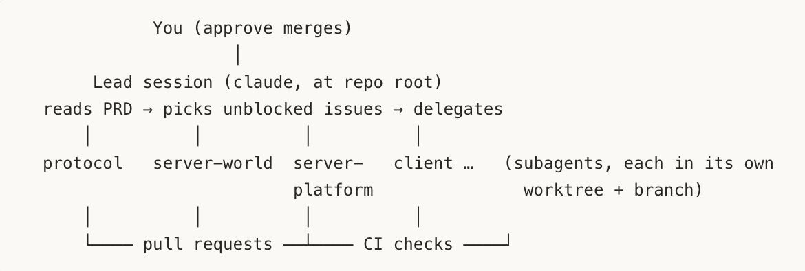
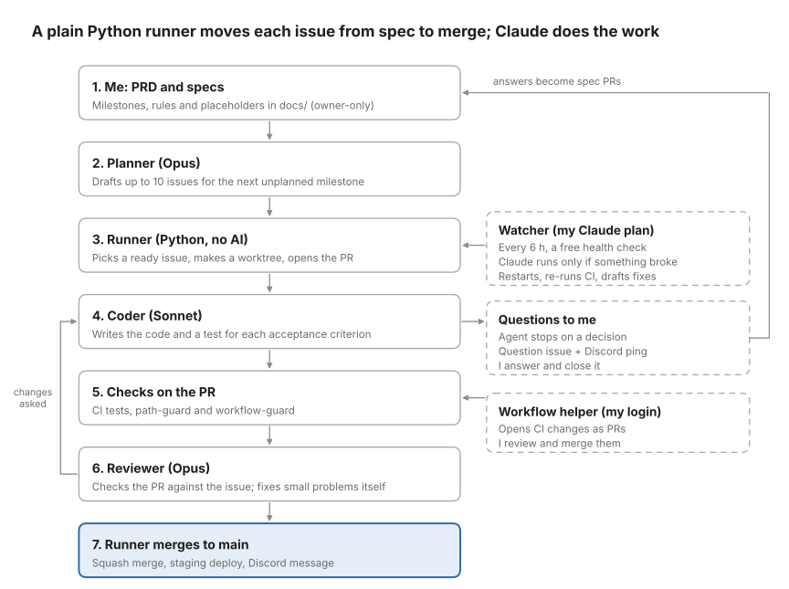
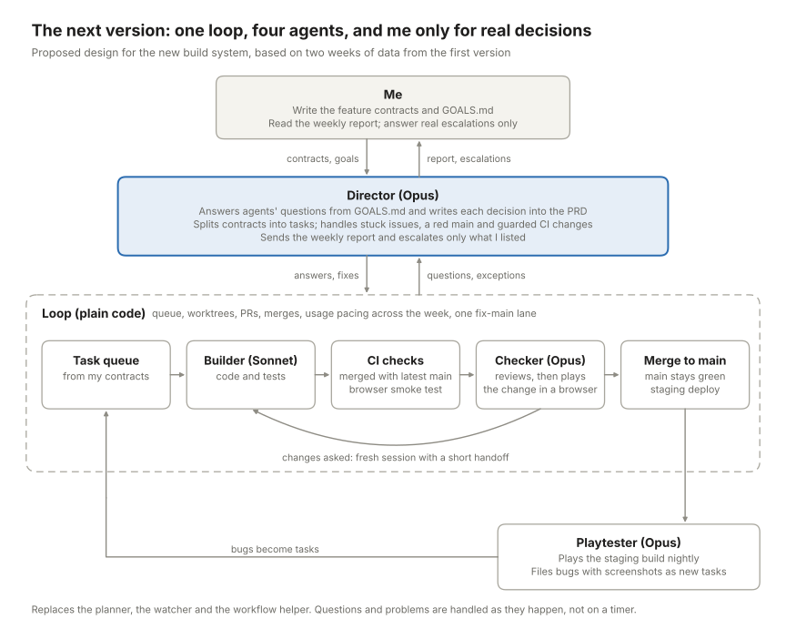

Building an MMO with an Autonomous Orchestration System
Sections bordered in red were written by Claude.
I wanted to make an MMO that could be played from any device within minutes of signing up. It would be fast and immediately allow you to interact and play with your friends. This was my main goal when deciding what to prioritize; getting people in and then giving them a reason to stay. I settled on an in browser mobile first design. It could be played comfortably with a cellular network connection within any browser. You didn't have to download anything or commit to any operating system or device. With these constraints it still had to maintain playability and be a full interactive MMO experience.
I wanted a system that, with enough direction, would allow Claude to develop the game for me. I settled on using my old laptop as an always-on environment where Claude could autonomously develop my game. I gave it its own claude pro account, a PRD, an orchestration system, and git to manage its state. After two weeks of development, I stopped it to reflect on what it was capable of, issues I encountered, and how I could improve my approach for the next iteration.
The Stack
I started off by prompting Claude (Opus 5.5) on what kind of game I wanted to make. I gave Claude approximate values on concurrent player count, world size and what types of actions I needed to decide on my technologies. I prioritized low latency and gameplay mechanics over visual graphics. The stack would be:
Client: Typescript, Three.js HTML CSS
Game Server: Go, WebSocket
Client Host: CloudFlare Pages
Server Host: Vultr, Caddy for HTTPS
Database: Vultr managed PostgreSQLGame Design - Initial PRD
I wanted my game to feel like a third place environment; a place where you could meet other students, interact with your friends or just hangout with people from the same school. Aside from basic MMO features like communication, character progression, customization and combat my game would also feature:
- Real map data from UCI to give players some form of attachment to the world of the game, instead of a fictional world that a player would have to grow interest in.
- Mini games you could play with anyone such as card games like uno, poker and blackjack. Sitting at a table to join or start a game with anyone online.
- Owning property that was part of the persistent shared world meaning your houses location would be part of the real world map. You could rent a house, decorate it and anyone you gave access to could see your decorations.
- A good/evil meter that only the player could see, your actions within the game carry a good/evil value that, once a threshold was passed, would unlock certain features. If you were evil enough you could kill in safe zones, or good enough you could have a visible marker above you in order to influence others to elect you for positions.
- Social structures with real power, groups would compete weekly for a chance to alter aspects of the game such as what music would be played and who would be taxed when making purchases.
The last two ideas revolved around what motivates people in societal structures and how I could use that to increase retention and engagement within my game. I wanted real dynamics to form between individuals and groups.
Visually it would feature low poly 3d objects with a third person perspective you could rotate. Half the screen would be for a Joystick control and buttons while the other half was left for a view of the game. It was beneficial to ask how other games that were similar to mine, designed their systems. It suggested using OSRS's tick system to allow for predictable gameplay. Then, I had Claude make me a PRD and specs folder based on what I had so far while asking me questions along the way.
- PRD (about 300 lines): summary, success criteria, Phase 1 scope, the must-have vs. stretch split, an explicit out-of-scope list, controls and core loop, the tech stack, architecture overview, load-test evidence, risks, 32 numbered decisions, open questions, and a section for agents with module ownership and rules.
- specs/: architecture, networking, persistence, map, gameplay, card tables, and operations.
— Claude
The Orchestration System
My goal was to have Claude run the entire development cycle and manage itself on my second computer. I would only interact if necessary and based on the PRD it would create a final product. Claude initially suggested:
A lead session with subagents in their own worktrees. You define one subagent per module in .claude/agents/. Setting isolation: worktree gives each one its own copy of the repo on its own branch. The lead hands a task to the right subagent, it builds and tests in isolation, and it reports back.
— Claude

I then asked Claude to find two public orchestration systems online to see how they were built and what we could learn from them. It studied Orbi and Sortie and compared it to what we currently have coming up with several changes, some of which were:
Move the bookkeeping from the AI lead into the supervisor. This matters most for your Pro plan:
- Today the lead spends tokens on every cycle just listing issues, reading CI status, and checking labels.
- In Orbi’s design, plain Python does all of that for free: pick the next ready issue, check what it’s blocked by, run the right agent, run the reviewer, apply the merge rules, move labels.
- AI is only used for writing code, reviewing, drafting the next milestone’s issues, and judging unclear failures.
Keep state on GitHub, not in a local note:
- Today attempt counts and history live in
~/.lush/HANDOFF.mdon the Mac. - Instead, use clear issue labels (
ready,in-progress,pr-opened,fix-needed,blocked,needs-detail) and a hidden marker in each issue’s comments that records the attempt count and the failure. - Same failure 3 times in a row → blocked. A wiped or rebuilt Mac then loses nothing, and you can see the whole history on GitHub.
— Claude
The final system was a Python runner that handed work to agents, opened PR's, merged and kept track of book keeping. A reviewer agent would then check PR's once they were completed fixing issues itself or handing back work. The python runner then decides what to do with that PR, so agents only focus on writing code. A planner agent would draft the next Github issues based on the PRD when work was running low. A watcher agent would run four times a day to check on the system and report to me when something was broken.

Anything the agent couldn't decide on would pause allowing the runner to open an issue on Github. I could comment a fix on the issue then close it, allowing the agent to carry on with my decision. For issues that involved gate files, files that set rules for agents, the watcher would draft a fix in a PR for me to merge or I could comment a different solution, add a watcher label and allow it to make the PR fix which then I could merge. The runner would use Discord to send me questions, PR's that were opened, merged, and when usage limits were hit. The watcher would send me updates on the system's status with a "Needs You" section with questions for me to answer and PR's to merge. This system would prove to have some flaws that I explore in later sections.
The Results
The Data
What Claude made was good but not great given the amount of time it had. Opus 5.5 is a very capable model and even using Sonnet as coder agents could still be very effective, but the real gaps were in the system and my lack of intervention. Here was the data:
| Measure | Value |
|---|---|
Code on main | Go server 39,100 lines, TypeScript client 29,300 lines |
Tests on main | 255 test files, 56,100 lines (45% of all code) |
| Agent PR open to merged | median 16 minutes; 90% within 4.8 hours |
| Issue created to closed | median 3.8 hours; 90% within 40 hours |
| Agent runs | 851: 408 coder, 370 review, 38 planner, 35 plan review |
| Agent working time | 4,012 minutes (about 67 hours) |
| Usage at API prices | $591 for the agents and watcher |
| Tokens | about 592 million, 92% of them cached context re-read; 8 million written |
Times main broke | 5 (Oct 31 to Nov 4) |
| Usage-limit pauses | 18, with 36 agent runs cut off and resumed |
| Questions to me | 64 (49 gate, 15 design), open for a median of 10.5 hours; 916 issue-hours in total |
The most revealing information was how much time work spent waiting compared to actual time spent coding; agents waited on usage limit resets, a broken main, and questions to be answered by me.
Agents Waiting
Once the code was written, a PR merged a median of 16 minutes after it opened meaning review, CI, and merging was fast. However, opened issues spent lots of time waiting with a median of 3.8 hours and 10% taking more than 40 hours, everything before the work started, meaning its time went to waiting for its turn, on other issues, usage limits or on my answers. The worst case was when main was broken for 41 hours due to a poor reaction from the runner.
The system used Github Actions to automatically test every PR before merging. One of my checks looked at Github's machines' own files as well as mine, so when Github's machines updated one night my test started to fail. A fix for the issue was created but was not able to merge since a rule in the runner prevented any merges while main was broken creating a deadlock. When other agents encountered the failure each filed duplicate issues to fix the broken main. If the runner had been an agent instead of a python script, if a rule had been defined to handle this case, or if I had intervened sooner, this could have been prevented. This leads to another point; the scope at which I would participate in the system.
Questions that were asked by agents remained open for a median of 10.5 hours meaning issues were idle until I gave an answer or until the watcher drafted my answer into a PR and I merged it. This would prevent even further development if multiple issues depended on the response of one question.
Most of these questions were gate questions (files only I control). They would be marked and drafted by the watcher for me to merge to prevent agents from changing rules in their favor or make edits to the PRD. The problem is the watcher ran every 6 hours so questions I could just answer were quick, but gate questions took 10.6 hours, because even a quick answer waited for the watcher’s next run. Before starting development I didn't consider the maximum involvement I wanted to have nor did I foresee it asking 64 questions.
Since I was using a Claude Pro plan with a 5 hour and weekly usage limit, agents were frequently cut off half way through development 36 times with a total of 18 usage limit pauses so once a limit was hit everything stopped. When an agent was resumed its cache had already expired then it had to resend its entire conversation making resuming expensive paying for the context again.
Other Issues
Aside from agents spending time idle I ran in to other issues including:
- Running out of Github's CI minutes on a private repository forcing me to make the repository public
- The planner running out of new work to create once all milestones in the initial PRD were fulfilled.
- I had to fix the system a total of seven times during development to fix issues I hadn't anticipated.
- The reviewer writing code itself; this meant Opus was used to write a lot of code instead of sending back fixes to the Sonnet agent.
- Agents sending over their entire context for each turn so agents had to read entire files instead of just short slices.
- There was never any full build test; only small pieces were merged and added at a time so the entire game couldn't be properly tested.
- Creating a convoluted helper script on my own mac login that would turn the watchers CI changes into PRs for me to merge since It required a different Github token for workflow changes.
Ultimately issues came from the initial setup and how I designed it. Had I been more thorough with the PRD and tested the system before letting it go a lot more could have been done.
The Next Iteration
For the second iteration I plan on taking into consideration everything I learned from this initial run on a new code base. The actual game itself has potential to be something great and with models like Opus 5.5 that potential can be met. The new orchestration system will be simpler, tested for edge cases, and have thorough documentation to allow for extensive development. I will document data and findings throughout the process instead of just at the end.
The issues that I want to handle from the previous system include:
- Proper setup including documentation so it can continuously work on the game without asking question
- handling a broken main properly; creating one fix and allowing that fix to be merged
- testing the CI and accounting for updates on the different machines I am using
- Handling gate questions fast instead of every 6 hours
- Spending less per agent turn by handing over only relevant information instead of whole files.
I'll be drawing out characters and objects for Claude to add to the game, being much more specific with design choices. I plan on taking pictures of actual locations on the map for Claude to reference when generating the UCI campus. I'll also be downscaling the map to allow for better quality content and less empty space.
The New Orchestration System

The new system will be simple and expected to run for long periods of time with little intervention. It will feature four agents: a director, builder, checker and playtester.
I will provide a detailed requirements document with a master goals file. The requirements document won't list every single task to be completed but instead feature contracts for each milestone; what the player can do, what must be true and how it should appear in the browser. The goals document will be my vision, goals and design choices for the director to inherit. The director then creates tasks based on those feature contracts and tailors its choices based on my goals file. I will be more diligent with this step of the process since it sets the framework for the entire system; it's more effective to allocate more time to this step than letting a system run for longer with a worse setup.
The director is also in charge of the health of the system, answering questions from agents and escalating only what is essential to me.
The runner will still be a python script with plain code because bookkeeping should work the same way every time; its actions are predictable and it can run every 90 seconds without cutting into usage. What isn't predictable is why main might have broken or what questions the agents might ask, so it starts a session with the director for its judgement. If main were to break the runner would start a director session for one fix and that fix to be merged.
The runner picks a task and starts a builder session in its own worktree to work on it. The builder then pushes its code and tests, the runner opens a PR and tests it is able to merge with the latest main using CI. These CI tests will now include a browser smoke test to see if it will actually run in the browser. If the builder has a question it stops and asks, the question is picked up by the runner and starts a director session for its judgement. The runner then restarts the builder with an answer in a fresh session instead of handing off the entire conversation.
The checker then reviews it against the initial task, if approved it is merged and another task can then be worked on. If something is missing the checker takes note and the runner starts a new builder session with a short handoff instead of all the previous turns.
Finally the playtester agent tests the entire game in a browser to find bugs, unlike the earlier browser smoke test this test is actually being played. It runs nightly since it does consume usage. Any bugs it does find become new tasks for the runner to queue.
The director will communicate with me through Discord for important issues and a weekly report.
In The Future
Taking inspiration from Spawn; I want a system that can debug and improve itself based on user reported bugs, bugs the playtester finds, and new ideas I hand the director. This would add another layer of autonomy and expand the lifetime of the game.